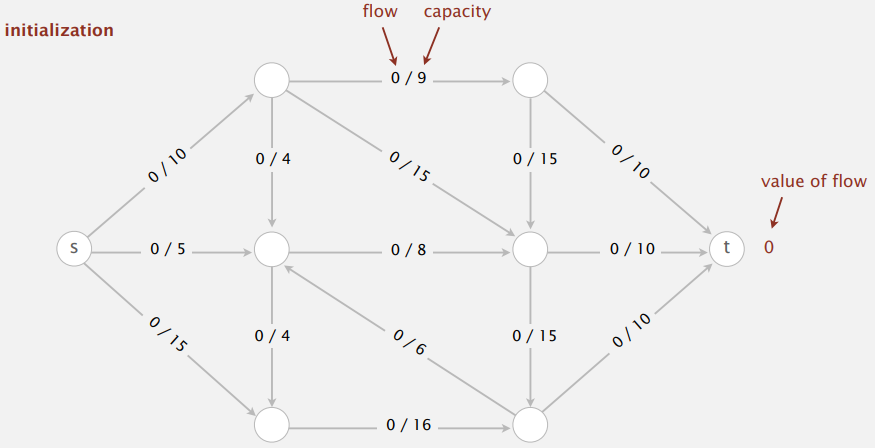
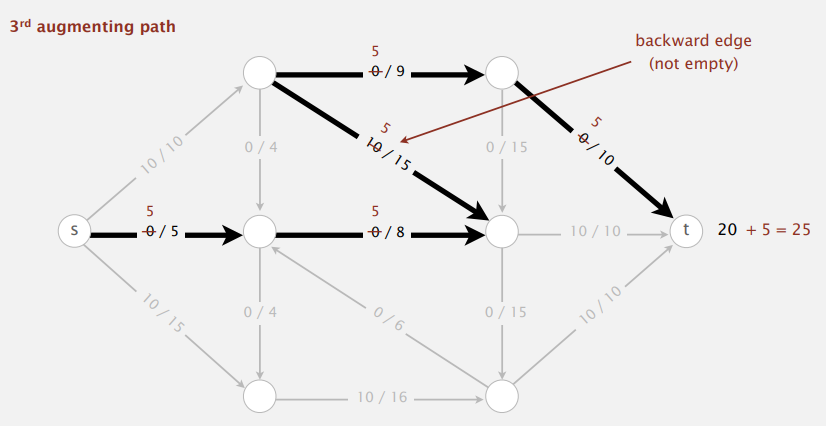
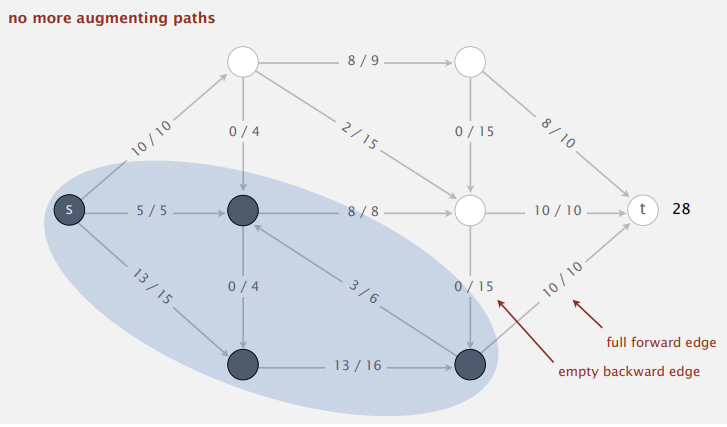
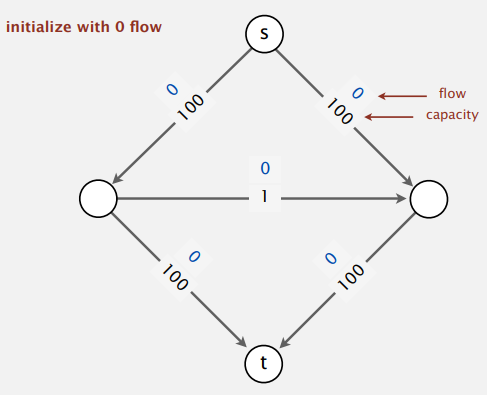
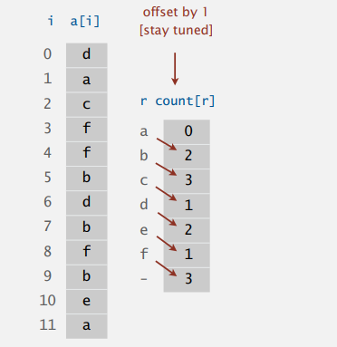
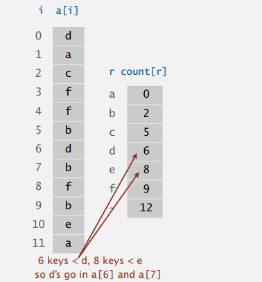
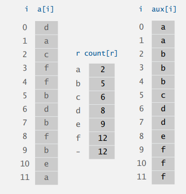
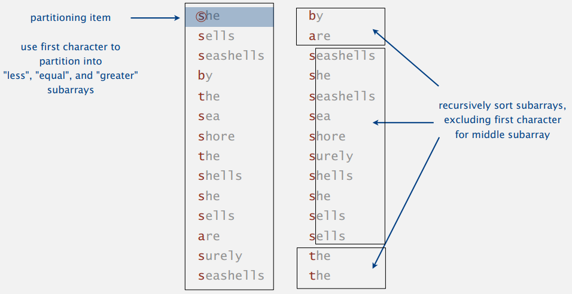

Algorithms II, Princeton University, P5
这是 Algorithms I & II, Princeton 系列笔记的 P5 部分。这一节将介绍：
- Maximum Flow & Minimum Cut.
- Radix Sort - LSD, MSD & 3-way radix sorts (Bentley & Sedgewick, 1997).
- Suffix Arrays.
This article is a self-administered course note.
It will NOT cover any exam or assignment related content.
Maxflow & Mincut
在了解最大流最小割定理前，我们先对最大流问题与最小割问题进行一个简单的介绍。
Mincut Problem
对于一个边权为正的 edge-weighted digraph，给出一个 source vertex \(s\) 与 target vertex \(t\).
关于 cut 的定义在之前 MST 的部分也介绍过。对于最小割问题我们引入一个 cut 的容量 (capacity)：即从一个点集到另一个点集间所有边的边权之和。
据此我们定义最小割问题：Minumum st-cut (mincut) problem. Find a cut of minimum capacity.
冷战期间，对于苏联-东欧的铁路网，我们假设破坏一个铁路线的代价是该铁路线的容量。西方世界想要以最小的代价切断两地的物资供应：这个问题的模型就是最小割问题。
Maxflow Problem
同样，对于一个有 source vertex 与 target vertex 的正边权 edge-weighted digraph 我们定义流：
流是一种分配方式 (assignment of values)，而流的值即最后流入 target vertex 的值之和。据此我们定义最大流问题：Maximum st-flow (maxflow) problem. Find a flow of maximum value.
冷战期间，对于苏联-东欧的铁路网，每条铁路都有其容量上限。苏联方想要找到一种运输方式，使得由苏联运送到东欧的物资总量最大化，这个问题的模型即为最大流问题。
Ford-Fulkerson Algorithm
Ford-Fulkerson 算法是求解最大流问题的经典算法，它通过不断寻找图中可能的 augmenting paths (增广路) 试图增加 flow 的值。本质上它是一个贪心算法，但通过 backward edges 引入了一个类似后悔的机制。
Initialization. Start with 0 flow.

在初始化之后，Ford-Fulkerson 算法开始不断寻找图中的 augmenting paths (增广路)。
注意增广路是 undirected 的：因此一条增广路可能包含若干条 forward edges 与若干条 backward edges。forward edges 是增广路中指向终点 \(t\) 的边；而 backward edges 是增广路中指向源点 \(s\) 的边。
In an augmenting path, we greedily increase the flow in all forward edges that are not full and decrease the flow in all backward edges that are not empty.

如图所示，在两次增广过后，Ford-Fulkerson 算法找到了第三条增广路，它包括四条 forward edges 与一条 backward edge。在 forward edges 上我们贪心的增加流量，在 backward edge 上我们贪心的减少流量。
在 local equilibrium 条件下我们得以计算出这条增广路的 bottleneck 是 5；因此它将为最大流贡献 5 流量。

Termination. All paths from \(s\) to \(t\) are blocked by either a
- Full forward edge.
- Empty backward edge.
如图，当图中没有增广路时，Ford-Fulkerson 算法将中止。而没有增广路的表现是，从 \(s\) 到 \(t\) 的所有无向路径都将被以上两种边所阻隔。换句话讲，所有存在 full forward edges 与 empty backward edges 的增广路的 bottleneck capacity 都是 0，无法为最大流做出任何贡献。
Running Time Analysis
一个图中的增广路数量 \(\leq\) 最大流的值：这是因为 Each augmentation increases the value by at least 1.
此外，对于一些特殊的构造，FF 算法可能显得比较低效。例如：

对于该图，朴素的 FF 算法在 100 次增广后才能计算出最大流 (其不断以 S 型与倒 S 型这两种 bottleneck capacity 为 1 的增广路进行增广)。解决的方法是采用特殊的增广路选取方式。\(V\) vertices, \(E\) edges, integer capacities between \(1\) and \(U\).
- shortest path: augmenting path with fewest number of edges. number of paths \(\leq \frac{1}{2}EV\).
- fattest path: augmenting path with maximum bottleneck capacity. number of paths \(\leq E\ln{EU}\).
Java Implementation
定义一系列 flow network representation。在 flow edge data type 中保存 flow \(f_e\) 与 capacity \(c_e\)。
定义一条边的 residual capacity (残留容量) 为：
- Forward edge: residual capacity = \(c_e-f_e\).
- Backward edge: residual capacity = \(f_e\).
如此一来，对于一条增广路，其 Augment flow 的计算方式为：
- Forward edge: add \(\Delta\) (residual capacity).
- Backward edge: substract \(\Delta\) (residual capacity).
在引入了 residual capacity 的概念之后，我们可以基于此构造 residual network (残留网络)。在原始网络中， augmenting paths 是 undirected 的，而在 residual network 中 augmenting paths 是 directed 的。
首先是 FlowEdge datatype 的实现：
1 | public class FlowEdge { |
接下来是 FlowNetwork datatype：其实现与
EdgeWeightedGraph datatype 的实现基本相同。注意，虽然边是
directed 的，但我们却需要将其同时加入 \(v\) 与 \(w\) 的邻接表中 (这是 undirected edge
的加边方式)；这是由增广路的 undirected 性质决定的。因此 \(v\) 中的边为 forward edge，\(w\) 中的边为 backward edge。
1 | public class FlowNetwork { |
最后是 FordFulkerson datatype：并且我们采用 shortest
path 策略来寻找增广路。在网络流中边权的意义是容量 (capacity)
而非距离。在距离意义上，每条边的长度都是 1；因此使用 BFS
即可保证找到的增广路最短。
1 | public class FordFulkerson { |
注意 inCut 函数：该函数在 FF 算法结束后被调用，判断在
residual network 中 \(s\) 是否能到达
\(v\)。
之前我们讲过，FF 算法结束后，网络中的点将会被分为两个点集，这两个点集被一系列 full forward edges 与 empty backward edges 分隔开来，因此在该 residual network 中不存在任何新的增广路。此外，源点 \(s\) 与终点 \(t\) 在 FF 算法结束后的 residual network 中一定分属不同的点集；如果它们仍然属于同一个点集，那么一定存在新的增广路。
inCut 函数的作用就是描述这两个点集的划分，即 cut：若
inCut(v) 为真，说明 \(v\)
处于源点 \(s\) 所在的点集内；反之说明
\(v\) 处于终点 \(t\) 所在的点集内。
更重要的是，该 cut 恰恰是这个网络的 mincut (最小割)！这绝非偶然：事实上，maxflow (最大流) 与 mincut (最小割) 问题是等价的 (dual problems)。我们将通过介绍 maxflow-mincut theorem 来说明这一点。
Maxflow-Mincut Theorem
Flow-value Lemma
首先我们引入 flow-value lemma：这一 lemma 将 flows 与 cuts 这两个概念联系起来。
Def. The net flow across a cut \((A,B)\) is the sum of the flows on its edges from \(A\) to \(B\) minus the flows on its edges from \(B\) to \(A\).
Flow-value lemma 的证明很符合直觉：它是由流的 local equilibrium 保证的。通过 flow-value lemma 我们还能得出一个有用的结论：Outflow from \(s\) = inflow to \(t\) = value of flow \(f\).
Weak Duality
Flow-value lemma 决定了第一个等式成立；flow bounded by capacity 决定了第二个不等式成立。这一性质称为 weak duality：true duality 由 maxflow-mincut theorem 决定。
True Duality
Augmenting path theorem. A flow \(f\) is a maxflow iff no augmenting paths.
Pf. The following three conditions are equivalent for any flow \(f\):
- There exists a cut whose capacity equals the value of the flow \(f\).
- \(f\) is a maxflow.
- There is no augmenting path with repect to \(f\).
其中 ii \(\to\) iii 与 iii \(\to\) i 的证明比较 trivial，联想 FF 算法的原理即可。需要稍作说明的是 i \(\to\) ii：
- Suppose that \((A,B)\) is a cut with capacity equal to the value of \(f\).
- Then, the value of any flow \(f'\leq\) capacity of \((A,B)\) = value of \(f\). (weak duality + assumption)
- Thus, \(f\) is a maxflow.
据此，通过 FF 算法求最小割的正确性得以证明 (具体实现见 Ford-Fulkerson 部分)：
- By augmenting path theorem, no augmenting paths with respect to \(f\).
- Compute \(A=\) set of vertices connected to \(s\) by an undirected path with no full forward or empty backward edges.
Key-Indexed Counting
典型的思路比代码好懂的算法。Key-indexed Counting 算法的目的是：Sort
an array a[] of N integers between \(0\) and \(R-1\). 我们照着代码对一个样例进行分析：
1 | int N = a.length; |
第一步：Count frequencies of each letter using key as index.

第二步：Compute frequency cumulates which specify destinations.

在第二次循环后，count[i] 的意义是严格小于
(这是由第一次循环中计算 count[] 时 offset by 1 保证的) key
i 的 keys 的个数，也即 key i
在排序后数组中的初始位置。
第三步：Access cumulates using key as index to move items.

每次将 key i 根据 count[i]
移动到指定的位置后，count[i]++；这是因为当我们要为下一个
key i 的出现做好“准备”。由于我们是按照 keys
的原顺序扫描的，key-indexed counting 是一个 stable 的排序算法。
第四步：Copy aux[] back into original array.
在之前学习排序算法时，我们提到过 compare-based sorting algorithm 的下界是 \(\sim N\log{N}\) 次比较。
注意这与 key-indexed counting 算法的线性复杂度并不冲突。key-indexed counting 实际上是桶排序的变种，它并不是 compare-based 的排序算法！
Radix Sort
基数排序的原理是将整数按位数切割成不同的数字，按位进行排序。因此其也完美符合字符串排序的要求：字符串是由一系列字符组成的，每一个字符就相当于其的一个“位数”。
LSD Radix Sort
LSD Radix Sort 即 Least-Significant-Digit-First Radix Sort；它从键值的低位到高位逐位进行排序。
1 | public class LSD { |
这个做法确实非常的优雅，正确性也比较符合直觉；由于采用了 key-indexed counting，每一轮排序都能保证是 stable 的；因此 LSD Radix Sort 是一个 stable 的排序算法。
Pf. [By induction on i] After pass \(i\), strings are sorted by last \(i\) characters.
- If two strings differ on sort key, key-indexed sort puts them in proper relative order.
- If two strings agree on sort key, stability keeps them in proper relative order.
注意，以上的代码是针对 fixed-length strings 的。对于 variable-length
strings，我们只需要用 -1 补齐每个字符串即可。(在 C
语言中则没有这种顾虑，因为每个字符串的末尾都添加了 '\0'
标识符)
MSD Radix Sort
类似的，MSD Radix Sort 即 Most-Significant-Digit-First Radix Sort，从键值的高位到低位逐位进行排序。很容易发现在 MSD 中我们需要引入 partition，按照类似 quick sort 的结构进行排序。
- Partition array into \(R\) pieces according to first character (use key-indexed counting).
- Recursively sort all strings that start with each character. (do key-indexed counting in each subarray)
与 LSD 相比，MSD 的劣势在于：
- 更多的空间。特别是每一层递归都需要为
count[]数组分配空间。 - 递归带来的较低效率。可以采用 cutoff to insertion sort for small subarrays 优化。
- Inner loop has a lot of instructions.
- Cache inefficient: accesses memory "randomly".
以上的种种缺点与相对比较复杂的代码换来的是 MSD 理论复杂度上的优势。由于 number of characters examined only depends on keys, MSD can be sublinear in input size!
1 | private static int charAt(String s, int d) { // for variable-length strings |
3-way Radix Quicksort
MSD 实际上使用的是 R-way Partitioning：它使用 key-indexed counting 将原数组分为 R 个 subarrays，每个 subarray 中的字符串都具有相同的第一关键字，接下来再递归的对这 R 个 subarrays 进行排序。
而 3-way radix quicksort 则借助了 3-way quicksort 的思想对 MSD 进行改造。对于所有第一关键字，选择一个 partitioning item，并对应的将所有字符串分为 less, equal 与 greater 三个 subarrays。

与朴素的 Quicksort for strings 相比，3-way radix quicksort 能够做到：
- Use \(\sim 2N\ln{N}\) character compares (instead of string compares) on average for random strings.
- Avoids re-comparing long common prefixes.
与 MSD (R-way radix sort) 相比 3-way radix quicksort 有以下优势：
- Has a short inner loop.
- Is cache-friendly.
- Is in-place.
注意 3-way radix quicksort 并未使用 key-indexed counting；但它仍然是一种 radix sort，因为它是按位进行排序的。从这个意义上来讲，比起 MSD，3-way radix quicksort 的亲缘关系更偏向于传统的 quicksort。
1 | private static void sort(String[] a) { |
Performance Analysis
对 \(N\) 个 \(W\) 位的字符串进行排序，若字符集大小为 \(R\)，我们有：
| algorithm | guarantee | random | stable? | operation |
|---|---|---|---|---|
| quicksort | \(1.39N\lg{N}\) | \(1.39N\lg{N}\) | no | compareTo() |
| LSD | \(2WN\) | \(2WN\) | yes | charAt() |
| MSD | \(2WN\) | \(N\log_{R} N\) | yes | charAt() |
| 3-way radix quicksort | \(1.39WN\lg{R}\) | \(1.39N\lg{N}\) | no | charAt() |
注意 compareTo()
操作的复杂度与字符串间的最长公共前缀的长度有关，因此其最坏是 \(\Omega(W)\) 的；而 charAt() 是
constant time 的操作。
对于 string sorting algorithms，我们能够作出以下总结：
- We can develop linear-time sorts (LSD): key compares not necessary for string keys; we use characters as index in an array.
- We can develop sublinear-time sorts (MSD): input size is amount of data in keys (not number of keys) and not all of the data has to be examined.
- 3-way radix quicksort is asymptotically optimal.
- Long strings are rarely random in practice: we may need specialized algorithms.
Suffix Arrays
接下来我们介绍后缀数组：一个字符串处理的终极利器，也是进一步理解后缀系算法 (后缀树，后缀自动机) 的基础。对于一个字符串，我们用数组保存其所有的后缀并进行排序，得到的数组即为后缀数组。
后缀排序问题本质上是字符串排序问题，所以以上介绍的 LSD，MSD 与 3-way radix quicksort 甚至传统的 quicksort 均可以作为后缀排序采用的算法；但其效率 ( \(\Omega(WN)\) 或 \(\Omega(N^2\lg{N})\) ) 难以满足实际应用的要求。
利用后缀这一特殊的性质，我们能设计出性能更加优越的后缀排序算法：Manber-Myers 倍增算法能够做到最坏 \(N\lg{N}\) 的时间复杂度，DC3 算法与后缀树能够做到线性的时间复杂度。
Manber-Myers MSD algorithm overview.
- Phase \(0\): sort on first character using key-indexed counting sort.
- Phase \(i\): given array of suffixes sorted on first \(2^{i-1}\) characters, create array of suffixes sorted on first \(2^i\) characters.
后缀数组的经典应用之一：Keyword-in-context search (本博客的搜索功能就是一种文本关键字搜索)。
- Proprocess: suffix sort the text.
- Query: binary search for query; scan until mismatch.
后缀数组的经典应用之二：Longest repeated substring。
- Brute-force: Try all indices \(i\) and \(j\) for start of possible match, and compute longest common prefix (LCP) for each pair. 该做法的复杂度为 \(\Omega (DN^2)\)，其中 \(D\) 是 LCP 的长度。
- 后缀数组做法：在求出后缀数组后对每个相邻的后缀求 LCP 即可。
1 | public String lrs(String s) { |
Reference
This article is a self-administered course note.
References in the article are from corresponding course materials if not specified.
Course info:
Algorithms, Part 2, Princeton University. Lecturer: Robert Sedgewick & Kevin Wayne.
Course textbook:
Algorithms (4th edition), Sedgewick, R. & Wayne, K., (2011), Addison-Wesley Professional, view